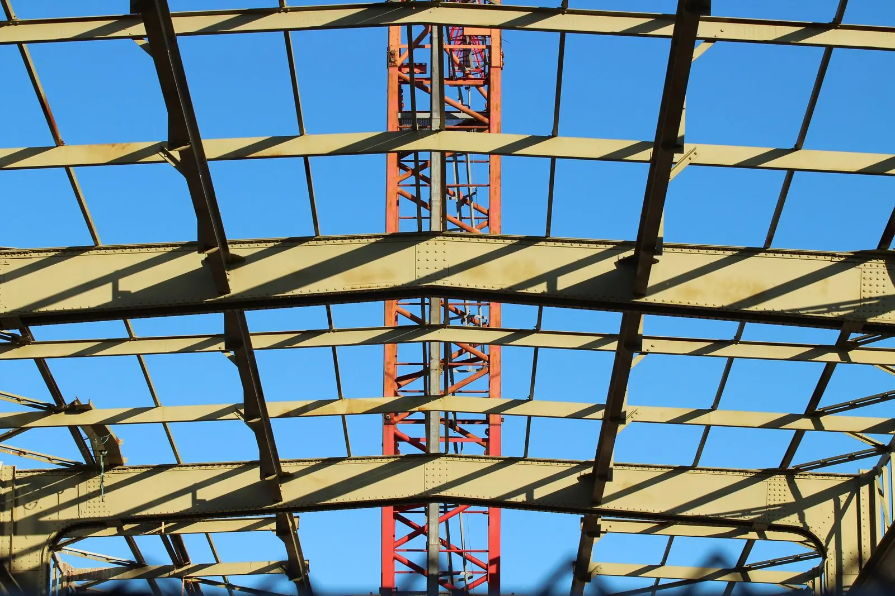
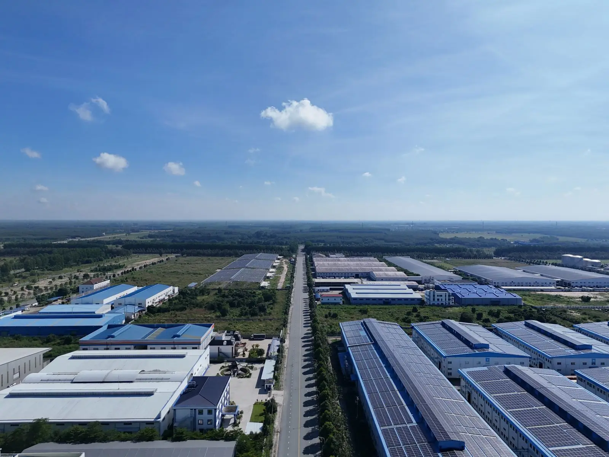
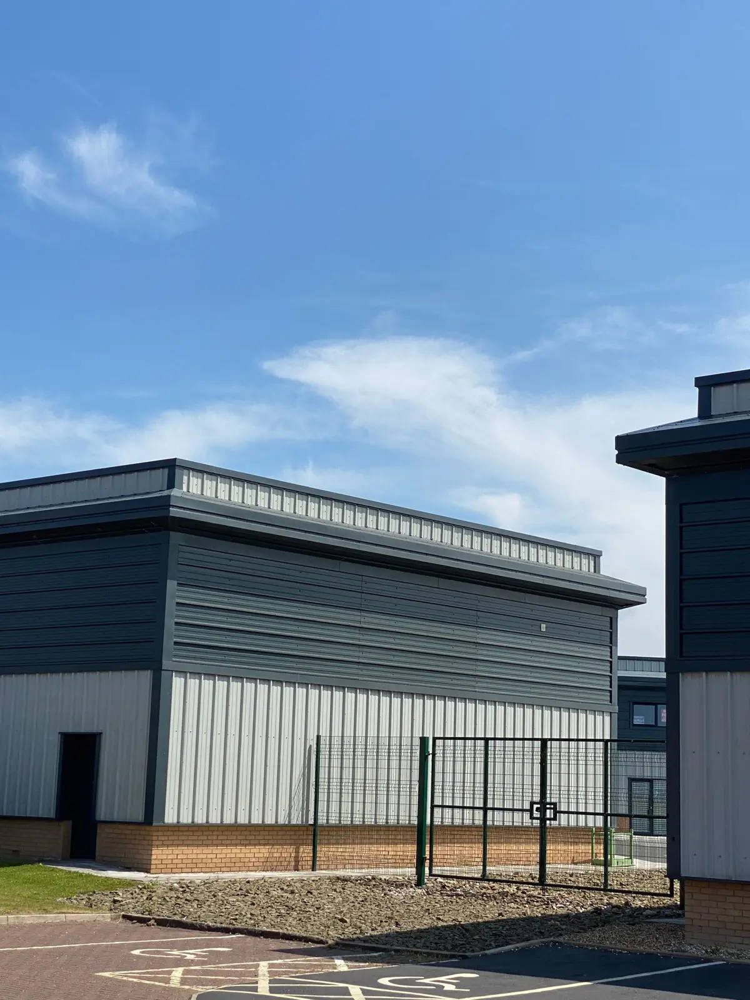
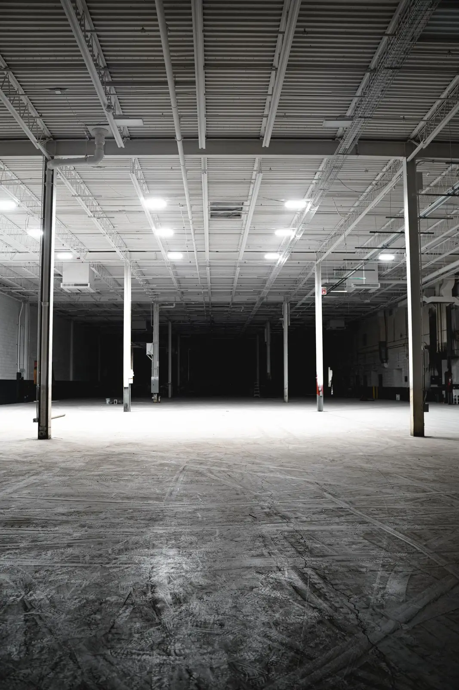
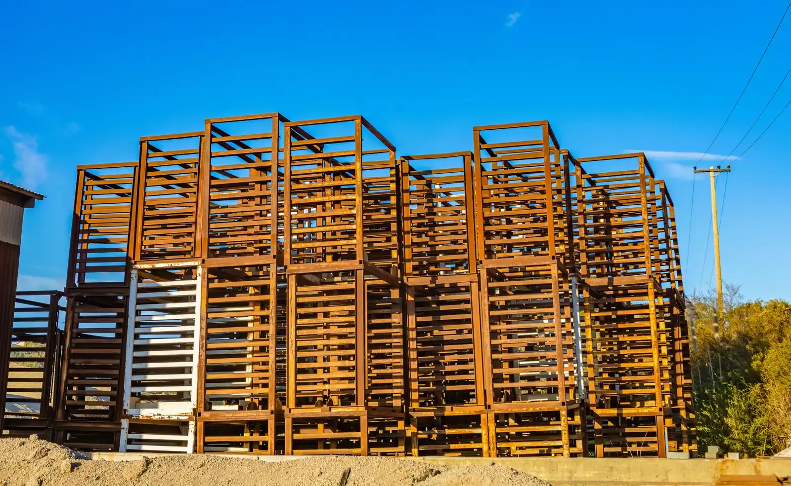
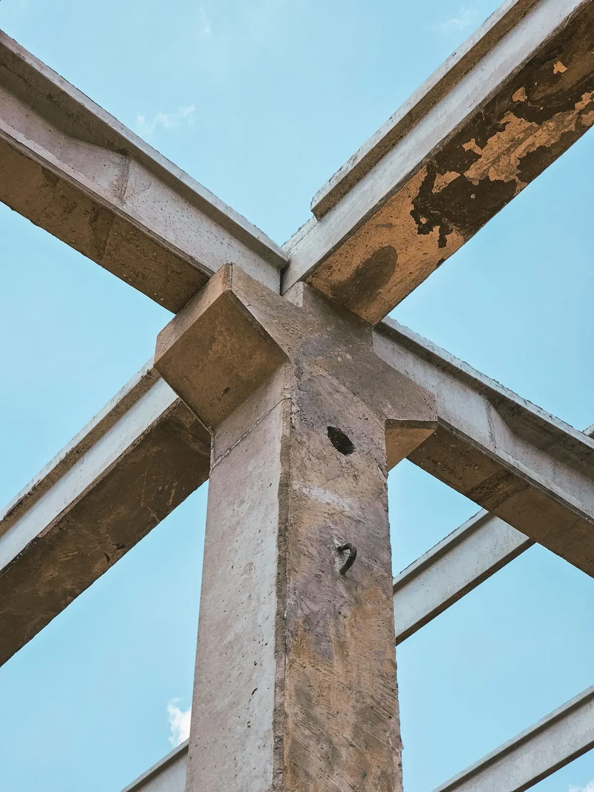
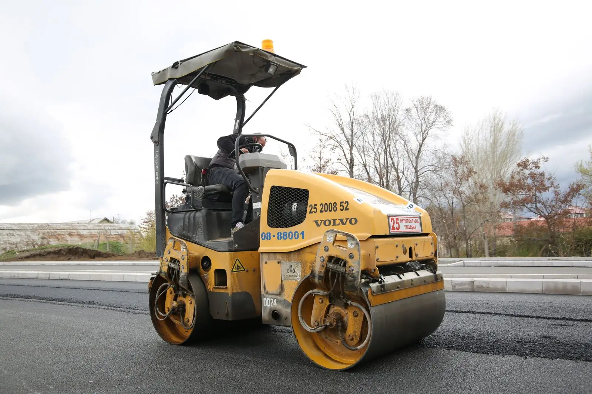
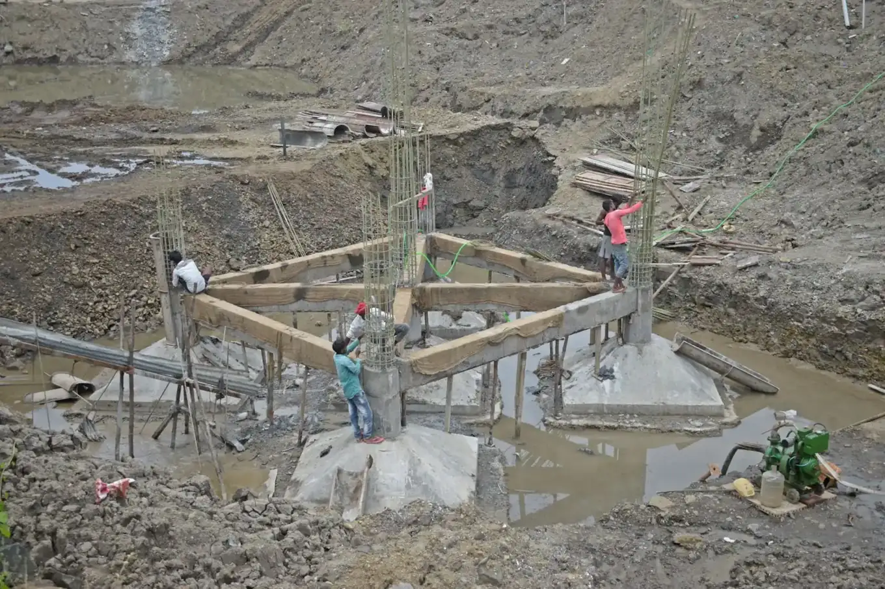
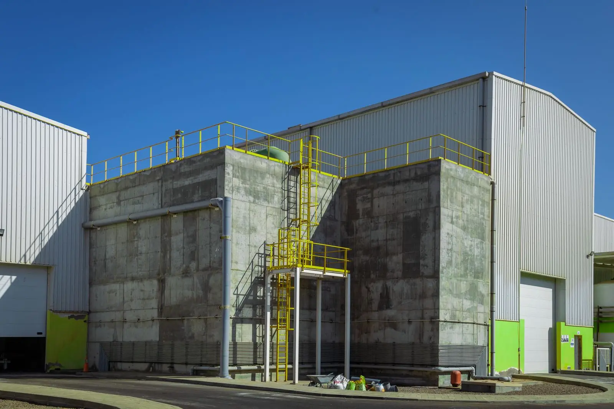

VX/00 Construtora industrial e comercial · interior de SP
Infraestrutura para empresas que não podem parar.
Engenharia que transforma operações em estruturas. Galpões, centros logísticos, fábricas e centros comerciais com projeto, obra e entrega sob uma só responsabilidade.
- Atuação
- Interior de São Paulo
- Segmentos
- Indústria, logística e varejo
- Contratação
- Turnkey e build to suit
- Resp. técnico
- CREA — preencher
01 Indicadores
Números de quem constrói para operar
Quanto já foi construído, montado e entregue, e quantas horas de trabalho sem acidente com afastamento.
Dados ilustrativosValores de exemplo para demonstração. No site real, entram os números comprovados da construtora.
Pedir estudo de prazo02 Soluções
Seis formas de tirar sua expansão do papel
Do contrato completo, com projeto e aprovação, ao pacote só de estrutura ou de pavimento.
Comparar modelos de contratação
Turnkey
Projeto, aprovações, obra e entrega com um único contrato e prazo fechado.
Ver solução
Build to suit
Prédio sob medida pago pelo investidor e alugado pela sua empresa.
Ver solução
Galpões logísticos
Centros de distribuição desenhados a partir do fluxo de carga.
Ver solução
Estruturas metálicas
Projeto, fabricação e montagem de estruturas de aço.
Ver solução
Pré-moldados
Concreto pré-fabricado: obra mais rápida e resistente ao fogo.
Ver solução
Pavimentação
Pátios, vias e acessos dimensionados para tráfego pesado.
Ver solução03 Obras
Obras com área, aço e prazo à vista
Cada obra traz ficha técnica, escopo, desafios, galeria e planta. Obras e números ilustrativos.
Ver todas as obras04 Modelo de execução
Sete etapas, nenhuma surpresa no meio do caminho
Clique em cada etapa para ver o que acontece e o que você recebe no fim dela.
Começar pelo diagnóstico05 Diferenciais
O que muda quando a engenharia vem antes da obra
Seis compromissos que viram cláusula de contrato, não frase de apresentação.
Ver como controlamos a obraEngenharia própria
Cálculo estrutural, planejamento e orçamento feitos por engenheiros da casa, não terceirizados.
Prazo com caminho crítico
Cronograma em linha de balanço, revisado toda semana e apresentado ao cliente com o mesmo formato.
Preço por escopo aberto
Planilha com quantitativos e preço por item. Aditivo só com mudança de escopo documentada.
Relatório semanal
Avanço físico, fotos, pendências e riscos toda sexta-feira, no e-mail de quem precisa decidir.
Segurança como indicador
Horas sem acidente, inspeções e treinamentos medidos como prazo e custo, no mesmo relatório.
Entrega documentada
Data book com projetos as built, ARTs, manuais e laudos de comissionamento no dia da entrega.

FIG. 06 · Fundação em execução · foto ilustrativa (Pexels)
06 Qualidade, conformidade e segurança
Normas cumpridas e sistemas de gestão de referência
As obras seguem as normas regulamentadoras de segurança, como a NR-18 (condições de trabalho na construção) e a NR-35 (trabalho em altura). Os sistemas de gestão tomam como referência a ISO 9001, o PBQP-H e a ISO 45001.
Referência demonstrativa. Certificações citadas são exemplo: no site real, só entram com o certificado e o número do registro.
07 Próximo passo
Sua próxima expansão começa com uma boa engenharia.
Envie as premissas da operação, o terreno e o prazo. Em até 5 dias úteis, um engenheiro retorna com a primeira estimativa de prazo e investimento.
